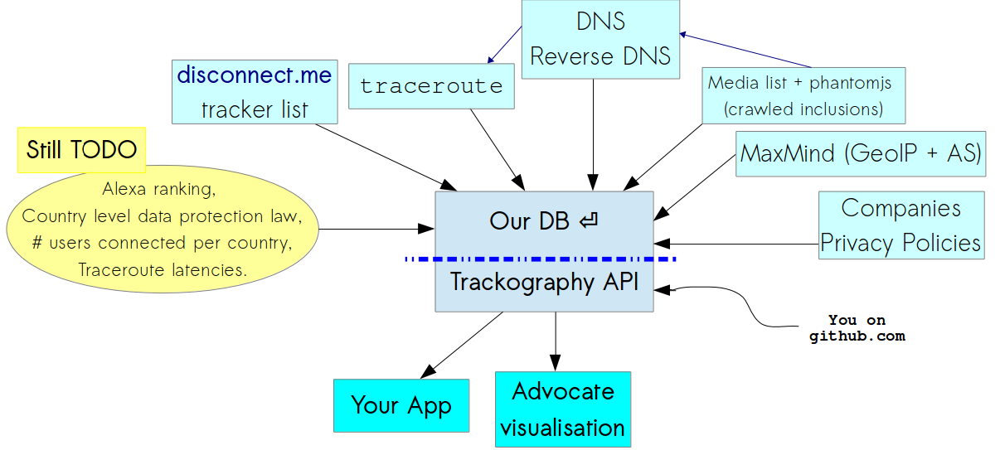

A Tactical Tech project
31st Chaos Communication Congress (31c3), 29th December 2014
“When governments collect data we call it surveillance, but when companies do the same, we mistakenly call it user services”Marek Tuszynski.
We mean websites which cover the news, are of public interest and which are regularly updated
Every country has its own media websites which are visited by its citizens from that specific country
We compiled lists of media websites for each country we examined and distinguished between global (e.g. theguardian.co.uk), national (covers the entire nation), regional (covers a region) media websites and blogs
The creation of such media lists requires local knowledge - which is why need you to collaborate with us
curl 213.108.108.94:8000/countries
["CAN", "SAU", "CHE", "AUS", "GBR", "IDN", "NGA", "GRC", "IND", "PHL", "IRL", "UKR", "BRA", "ISR", "ITA", "SYR", "GTM", "DEU", "MEX", "PSE", "KEN", "HRV", "ZAF", "ESP", "PAK", "KHM", "THA", "RUS", "URY", "SWE"]
30 collected countries
Number of countries we have media lists for: 40
github.com/vecna/trackmap/verified_media$ ls | wc -l
40
Number of media websites: 3,242
github.com/vecna/trackmap/verified_media$ grep http * | wc -l
3242
Number of media included in every test: 54
github.com/vecna/trackmap/verified_media$ grep http ../special_media/global | wc -l
54
Our script is designed to:
They are based on intercepted HTTP connection, redirected to another server, injecting a browser exploit or tampering a download on-the-fly.
when we access media websites, third parties track us and create profiles about us
Ukraine Russia
TODO linkIsrael Palestine
TODO linkIsrael Palestine
TODO linkThey change in time, but most important, change depending on the source!
TODO - link heatmap: http://213.108.108.94:8000/glob.htmlTrackography API
URL
Third party trackers (a.k.a tracking companies) engage in (one or more of) the following:
We collected the following fields of data from the privacy policies of some of the globally prevailing tracking companies:
Largely conditional because in some cases:
opt-out is illusional
data retention issue
safeharbour framework fluff
they are INADEQUATE to safeguard individuals
But we are still looking at this because it would be interesting to look at what they do and how they say they protect our data, and to COMPARE
We are storing those data in a CSV (and we need support about it, is one operation that cannot scale technically so has to scale socially)
(we credit every effort!)| Types of tools | Tools for Firefox | Tools for Chrome |
| Blocks third party trackers | Privacy Badger, AdBlock Plus, Ghostery and Disconnect | Adblock Plus, Ghostery and Disconnect |
| Blocks third party scripts | NoScript | ScriptNo |
| Blocks cross-site tracking | RequestPolicy and Priv8 | |
| Sets opt-out cookies | Beef Taco | |
| Clears your browsing history | Click&Clean | Click&Clean |
| Visualises third party trackers | Ghostery and Disconnect | Ghostery and Disconnect |
wget https://github.com/vecna/trackmap/blob/master/setup.sh && sh ./setup.sh
cd trackmap
./perform_analysis.py -c NAME_OF_YOUR_COUNTRY
@trackography_. Automatical update every received test.
myshadow link